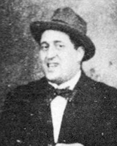

Ґійом Аполлінер
Роки життя:1880−1918
Читати:
«Лорелея»
На початку XX століття французька поезія почала розширювати коло своїх художніх пошуків. Гійом Аполлінер, як у фокусі, зібрав художні імпульси, що йшли з минулого, і багато в чому визначив розвиток французької поезії на десятиріччя вперед.
Народився 26 серпня 1880 р. у Римі під іменем Вільгельма Альберта Влодзімєжа Александра Аполлінаріса Костровицького. За походженням італієць - був позашлюбним сином польської дворянки Анжеліки Костровицької (російської підданої, дочки польського шляхтича Міхала Аполлінарія Костровицького герба Вонж (мали маєтки біля Новогрудка у Білорусі (в Російській імперії), еміґрував після придушення Польського повстання 1863—1864 р.; служив офіцером у гвардії Папи Римського) та італійки Джульєтти Флоріані); мати визнала сина не відразу. Батьком майбутнього поета був італійський аристократ, офіцер, очевидно Франческо Флуджі д'Аспермон. Таким чином, його рідними мовами були італійська та польська мови, оскільки мати зуміли привити йому інтерес до польської культури, афранцузьку він опанував згодом. За світоглядом і рисами Аполлінер усвідомлював себе належним до середземноморського світу, друзі відзночали присутність в його характері «південних», «латинських» рис.
Дитиство Аполлінера пройшло в Італії, у 1887 разом з матір'ю і молодшим братом Альбертом переїхав до Монако, де навчався у релігійному коледжі Св. Карла. У 1896—1897 роках упродовж п'яти місяців відвідував ліцей у Ніцці, згодом вступив до ліцею Станіслава у Каннах. У 1897 він залишив ліцей у Ніцці, назавжди обравши поезію. У той час пише вірші, оповідання з циклу «Єресіарх», перекладає з Бокаччо.
У 1899 році разом із матір'ю і молодшим братом перебрався в Париж. Жили в скруті, Гійом працював службовцем банківської контори, підробляв «літературним негром», згодом оселився окремо від сім'ї. Дебютував у пресі 1901 року, коли газета «Ґранд Франс» опублікувала невелику добірку віршів, підписаних прізвищем Костровицький, зокрема вірш «Місто і серце», в якому сполучається любовна лірика з урбаністичними мотивами, що стало характерно для всієї подальшої творчості.
У 1901 влаштувався домашнім учителем у графську родину Міло. Разом з графинею Міло та її дітьми подорожує по Рейну, наступного року — південною Німеччиною та Чехією. У цей час переживав нерозділене кохання до гувернантки англійки Анни Плейден, яка теж працювала у Міло. Результатом став цикл «Рейнські вірші» і поема «Пісня нелюбого».
Повернувшись 1902 р. до Парижа, Аполлінер стає редактором фінансового видання «Супутник рантьє». Займається журналістською діяльністю, пише невеликі статті для журналів «Європеєць», «Сонце», «Мессідор», «Соціальна демократія». В тому ж році публікує кілька віршів і оповідань, один з яких — «Єресіарх» («L'eresiarque») був вперше підписаний псевдонімом Гійом Аполлінер. Відправляється в один з рейнських замків. Відтоді поет увійшов до паризького середовища авангардистів. У 1903 знайомиться з поетами Максом Жакобом і Андре Сальмоном, разом з якими заснував журнал «Езопове свято» («Le Festin d'Esope»), що виходив до 1904 р. (вийшло 8 номерів). Стає завсідником літературних кафе; знайомиться з плеядою визнаних метрів і майбутніх знаменитостей Жаном Мореасом, Полем Фором, Альфредом Жаррі, Морісом де Вламінком, Андре Дереном, Анрі Руссо, Пабло Пікассо (у липні 1904). Друкується в журналі «Вірші і проза», який видавався поетом-символістом П.Фором.
1907 — пише заради заробітку два еротичних романи. Виступає з лекціями в Салоні незалежних художників про поетів і поезію.
1908 — у лекції під заголовком «Нова поетична фаланга» Аполлінер висуває програму нового, гуманістичного ліризму.
1909 — починає вести рубрику художньої критики в журналах «Непримиренний» і «Французький Меркурій»; великий резонанс викликає його стаття «Поезія символістів» («Poesie symboliste»).
Травень 1909 — публікує поему «Пісні нещасливого в любові» («La Chanson du mal-aime»), у грудні поетичну прозу «Гниючий чарівник» 1910 — виходить збірник розповідей «Єресіарх і компанія» («L'eresiarque et Companie»).
Березень 1911 — опублікована віршована збірка «Бестіарій, чи Кортеж Орфея» («Le Bestiaire, ou le Cortege d'orphee»). Відкриває в «Французькому Меркурії» розділ «Курйози», що веде до самої смерті.
7 вересня 1911 — по підозрі в співучасті в крадіжці «Джоконди» Леонардо да Вінчі з Лувра посаджений у паризьку в'язницю Санте; 12 вересня відпущений за відсутністю складу злочину.
1911: Рання лірика. З фінансових міркувань Аполлінер писав порнографічні романи, найвідоміший з яких «Одинадцять тисяч різок» («Les onze mille verges»), опублікований у 1907 році, по-новому представив праці маркіза де Сада.
Двома роками пізніше з'явилася розповідь «Гниючий чарівник» («L'enchanteurpour-rissant»), проілюстрований Дереном. У ньому Аполлінер вперше заявив свої основні теми: любовні страждання, суміш реальності і «надреальності», неправди і правди. Стилістично Аполлінер йшов новими шляхами: він комбінував різні оповідні стилі і скасовував класичну просторово-часову структуру оповіді (хронологічна побудова оповідань і романів). У 1911 році вийшов його перший збірник віршів «Бестіарій, чи Кортеж Орфея" («Le bestiaire ou le cortege d'orphee») - римовані, головним чином присвячені тваринам, чотиривірші з ілюстраціями Дюфі.
1912 — разом із друзями засновує журнал «Паризькі вечори» (з 1913 р. його директор), покликаний інформувати публіку про нові тенденції в поезії і живописі; на його сторінках фігурують імена М.Жакоба, Б.Сандрара, Анрі Матісса, А.Руссо, А.Дерену, Франсіса Пікабія, Жоржа Шлюбу, Фернана Леже, М. де Вламінка й ін.
Лютий 1912 — друкує найліричніший з своїх віршів «Міст Мірабо» («Le Pont Mirabeau»), а в грудні — поему «Зона» («Zone»), що висуває його на перше місце серед сучасних йому поетів.
Червень 1913 — слідами лютневої виставки італійських футуристів пише статті «Футуристична антитрадиція» («L'antitradition futuriste»). У травні 1913 випускає книгу «Художники-кубісти: міркування про мистецтво» («Les Peintres cubistes: Meditations esthetiques»), де доводить право кожного художника на творчий пошук.
Аполлінер, що виклав у цій книзі принципи мальовничого кубізму, сам випробував на собі вплив цієї школи і намагався перенести її прийоми на мистецтво слова. Не задовольняючись порушеннями канону в області синтаксису, метра і словника, Аполлінер виганяє з своїх віршів пунктуацію, вдається до типографських хитрувань і ін. прийомів, мета яких дати в поезії властиве мальовничому кубізму багатопланове відчуття об'єкта. Після виходу книги Аполлінера визнають глашатаєм і теоретиком кубізму.
1913 — виходить збірник віршів 1898—1913 р. «Алкоголі» («Alcools»). Цей збірник, як і «Міркування про мистецтво», розглядалися поетами-модерністами в якості програмних. Назва збірника натякала на п'янку якість «нового світу», на його технізованість і стрімкий темп життя. П'ятдесят віршів збірника не відзначені якоюсь єдиною стильовою спрямованістю, вони демонструють елементи футуризму і стилістичну багатогранність автора. «Алкоголі» затвердили безпунктуаційне написання, яке Аполлінер вперше використовував у «Зоні». У цій «естетиці здивування» він розглядав кубізм як вихідний пункт власної поетичної творчості. Перший вірш «Зона», будучи гімном Ейфелевій вежі, великому місту і — одночасно — визнанням самотності людини в ньому, являв собою маніфест сучасної лірики: речі і думки, реальність, почуття і картини сну сплітаються тут воєдино. Аполлінер писав довгі римовані і неримовані вірші, ігнорував пунктуацію і загальноприйняту метрику. Велику частину збірника складали символістські і романтичні вірші, а також вірші з відгомоном народних пісень (зокрема, рейнських). Особливу популярність завоював вірш «Міст Мірабо» («Le Pont Mirabeau»), у якому Аполлінер порівнював своє любовне страждання з повноводною Сеною. «Пісня нелюбого» («La chanson du malaime») — автобіографічний вірш, у якому Аполлінер писав про своє велике нерозділене кохання. У цих віршах — як і в інших своїх доробках — Аполлінер виставляв себе аутсайдером, і ця доля, на його думку, уготована в суспільстві всім художникам-авангардистам.
1914 — публікує кілька експериментальних віршів, набраних у формі малюнків (каліграм).
1915 — під час Першої світової війни Аполлінер іде добровольцем на фронт, де одержує важке поранення в голову. Після демобілізації повертається в Париж, де займається активною творчою діяльністю.
1916 — випускає збірник розповідей «Убивство поета» («Poete assasine»); в одному з них змоделював універсальний образ долі поета, відданого на розтерзання юрбі.
Червень 1917 — здійснює постановку своєї п'єси «Груди Тирезія» («Les Mamelles de Tiresias»), що викликали суспільний скандал. П'єса «за допомогою ірреальності, що відбувається, особливих декорацій, танців, акробатики і шумів була покликана показати Аполлінерове уявлення тотального театру». Ця п'єса, на підставі нової естетичної форми, вважається початком театру абсурду. Для такого роду драматургії Аполлінер першим висунув поняття сюрреалізму.
У грудні Аполлінер виступає з лекцією «Нова свідомість і поети» («L'esprit nouveau et les poetes»), що став його поетичним заповітом.
1917—1918 — активно публікується в журналах, готує декілька сценаріїв для фільмів, пише дві п'єси і комедію «Казанова» («Casanova»).
У 1918 році з'явилися «Каліграми». Аполлінер організував вірші візуально і, таким чином, уперше створив так звані ідеограми, у яких текст і текстові образи сплавляються воєдино. У тому ж році 38-літній поет помер в Парижі від грипу. Незабаром після його смерті вийшов том розповідей «Єресіарх і Ко» («L'heresiarque et Cie», 1920), у яких дійсність і вигадка спліталися в нову фантастичну реальність.
Особлива емоційність віршів Аполлінера естетизує області діяльності людини, що вважалися до того непоетичними. Аполлінер радив сучасним поетам звертатися до романного досвіду. Він орієнтує вірш на асоціативний образ, вводить у тканину тексту некнижне слово, поетичність підтримується як за допомогою рими, так і через зміну внутрішньої змістовності. Поет називав свою реформу вірша, його формальний і змістовний рівні, як би це не могло здатися парадоксальним, «натуралізмом вищого порядку», маючи наувазі «правду життя». Саме Аполлінер вводить у літературний побут слово «сюрреалізм», що в його інтерпретації означає «новий реалізм», як антитезу абстрагованості символізму і життєподібності натуралізму.
Аполлінерові належать кілька збірників віршів, новел, оповідань, буфонна п'єса «Груди Тиресія» (1917) і опублікований посмертно роман «Сидяча жінка» (1920). Перший виданий поетичний збірник називається «Бестіарій, чи Кортеж Орфея» (1911). Поет, використовуючи середньовічний жанр бестіарію, чотиривірша, що об'єднує розповідь про тварин з повчальною мораллю, передає свою насолоду життям. Зрілішим є збірник «Алкоголі» (1913), у якому Аполлінер змінює камерну символістську естетику на епос, роблячи предметом поетичного дослідження повсякденність, за якою ховається могутній і трагічний ритм століття, що почалося. Лірична епічність поезії Аполлінера не суперечить музикальності.
Під час першої світової війни Аполлінер іде добровольцем на фронт. у березні 1916 року він був важко поранений в голову, після поранення поет так і не зміг одужати. 9 листопада 1918 — Аполлінер помер в Парижі у віці 38 років, заразившись іспанським грипом. Похований 13 листопада на цвинтарі Пер-Лашез.